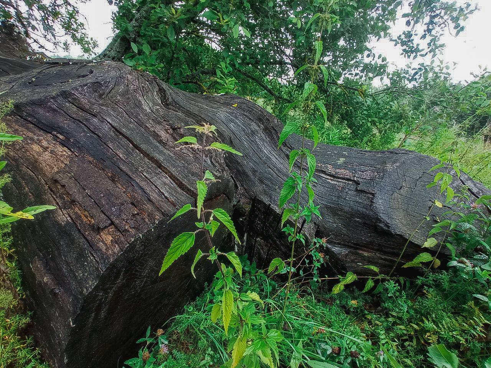
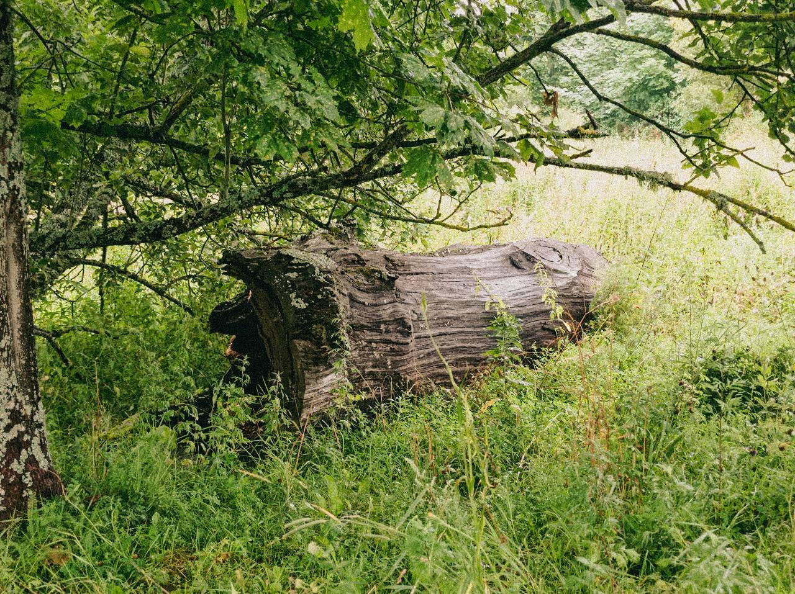
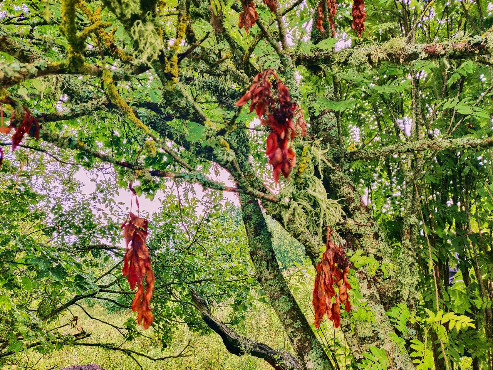
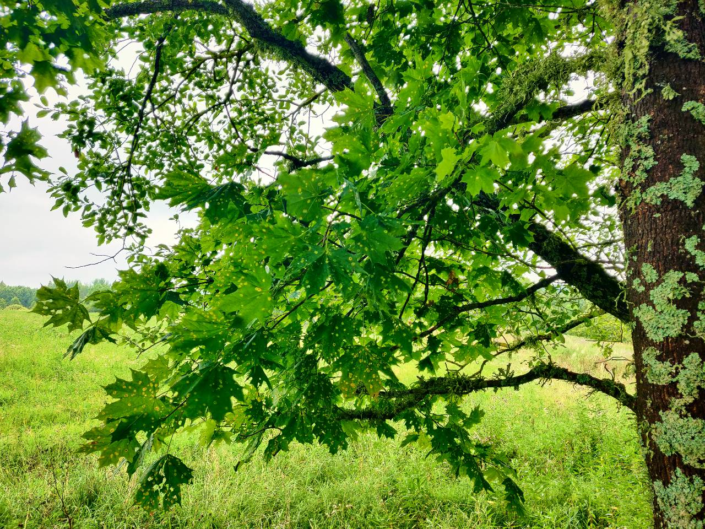
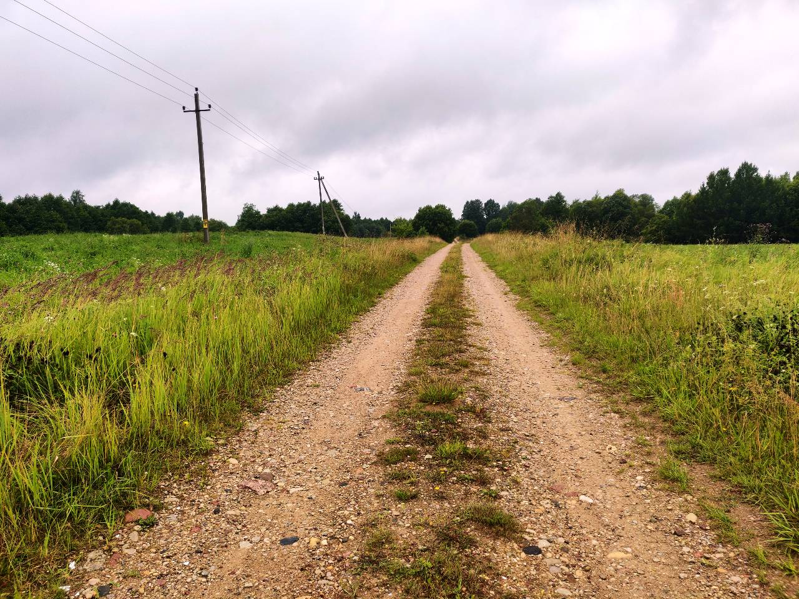
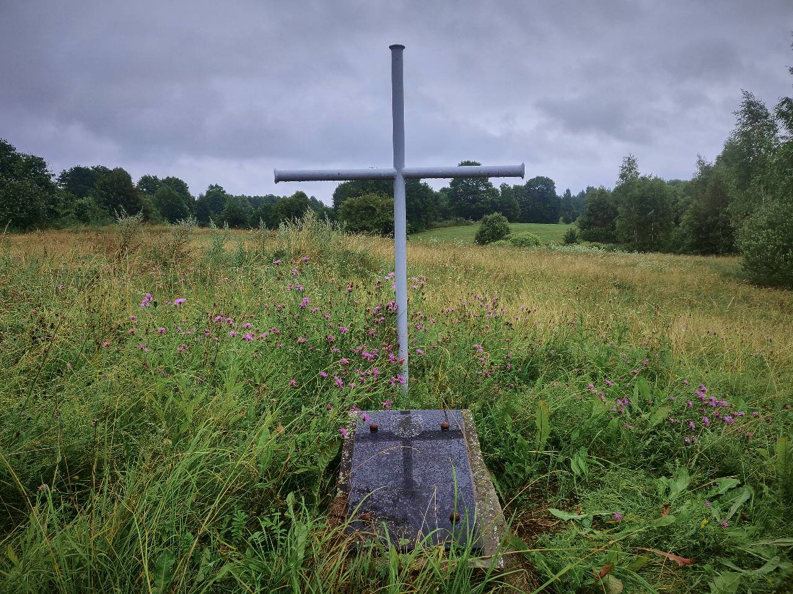
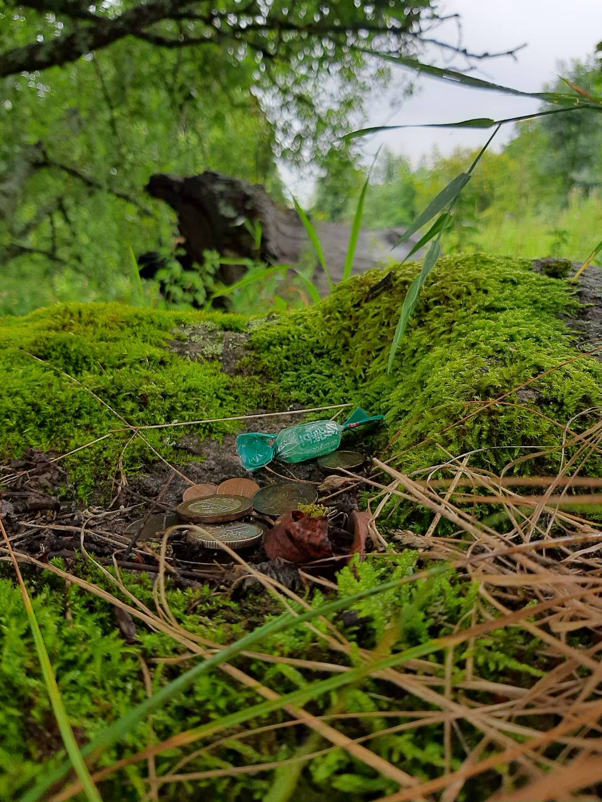
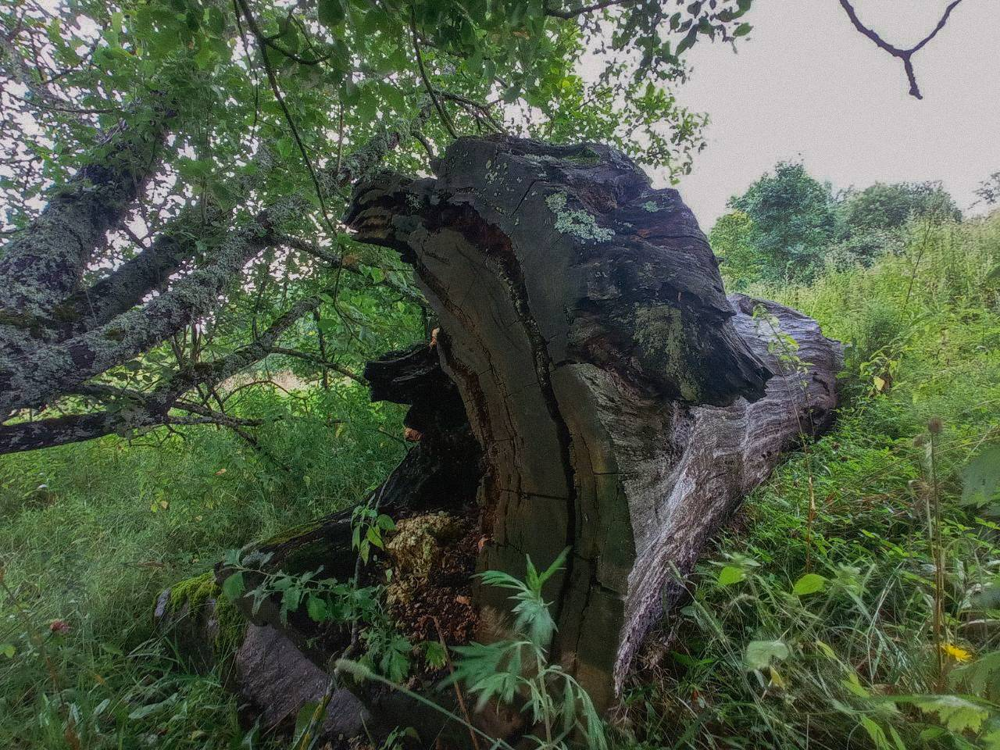

Древнее капище и остатки упавшего огромного дуба, которые лежат на каменном идоле. Камень-жертвенник, и очень живописное место у самой дороги, приносящее удачу. Интересно? Поехали!
Местные жители времени язычества считали это место святым. Сколько лет дубу, который там стоял, до сих пор точно не известно. По рассказам, диаметр его у подножия земли составлял 14 метров. А высотой он был с Лынтупский костёл, а это 30 метров ввысь!

Ещё в 70-е года прошлого века дуб был настолько огромным, что в его дупле местные пастухи прятались от дождя и жгли костры. В результате многочисленных поджогов дерево упало, а местные жители распилили дуб для своих нужд. Сейчас остаток огромного священного дерева от уровня головы человека и выше лежит на упавшем каменном идоле на месте древнего капища.

Капище - языческий храм под открытым небом. На нем обязательно есть камень-жертвенник с выемкой для жертвоприношений, священное дерево - упавший дуб и идол. На камне возле остатков дуба до сих пор люди оставляют монетки, чтобы задобрить богов и получить их помощь.

Жёлуди, ветки и кора дуба приносили удачу и помогали людям. Так прадед краеведа Алеся - участник восстания 1831 года был лишён дворянства и отправлен по этапу на 25-летнюю каторгу в Сибирь. Его жена передала ему кору и сучок дуба. Прадед вернулся с каторги живым, имел детей, и стал участником восстания Кастуся Калиновского в 1863 году, и смог избежать репрессий после его подавления! Невероятную удачу вся семья приписывает помощи священного дерева.
 
Почему стоит ехать на это место:
⁃ рядом с дорогой, легко доступно
⁃ живописно: получаются отличные фото
⁃ «намоленное» место приносит удачу, а древние боги обязательно помогут, если вы придёте к ним с чистым сердцем и уважением к духовной культуре этой земли!
Записали Леша Прибытков, Коля Кравченко.